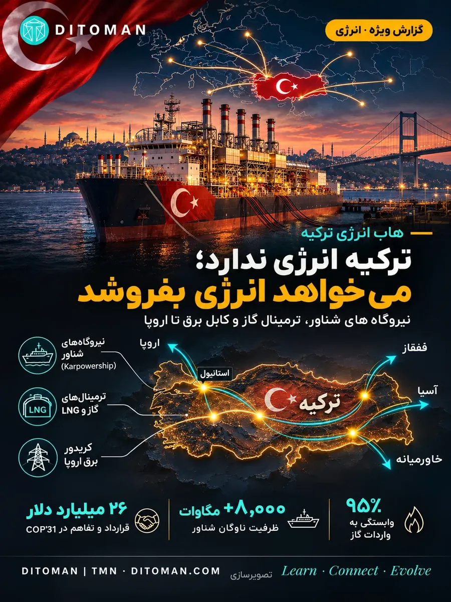
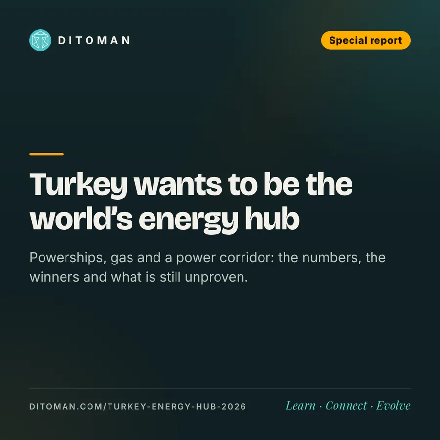
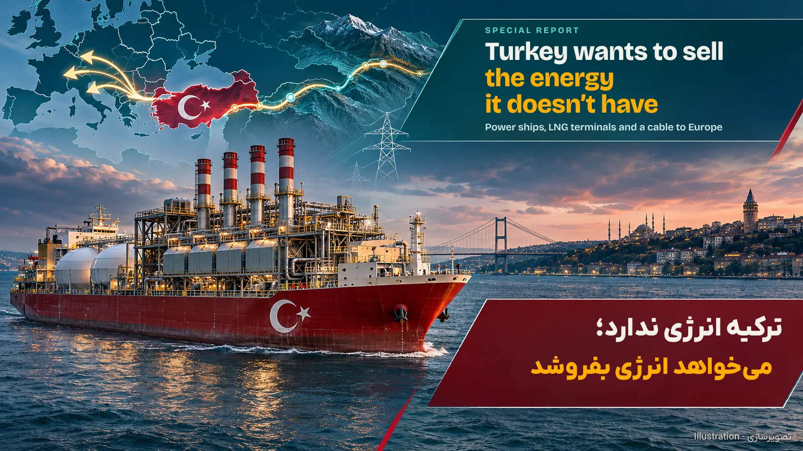
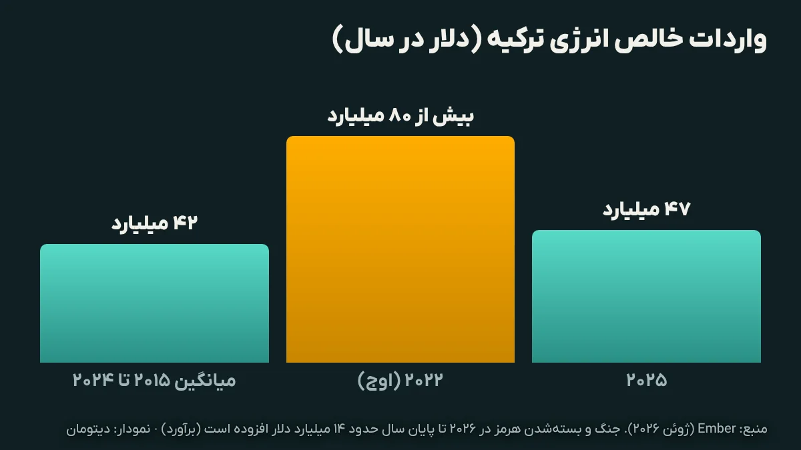
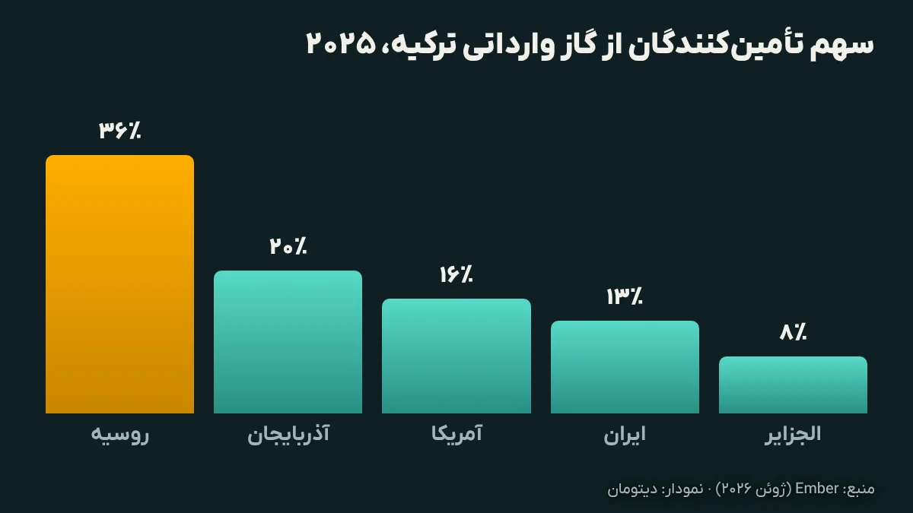

ترکیه میخواهد هاب انرژی دنیا شود: نیروگاه روی کشتی، گاز و کریدور برق
Turkey wants to be the world’s energy hub: powerships, gas and a power corridor
کشوری که ۹۵٪ گازش را وارد میکند، میخواهد انرژی را به دیگران برساند. این نقشه چقدر واقعی است، چه کسانی برندهاند و چه چیزی هنوز ثابت نشده؟
A country that imports 95% of its gas wants to carry energy for others. How real is the plan, who wins, and what is still unproven?
1. کشوری که انرژی ندارد، چطور میخواهد انرژی بفروشد؟
ترکیه نفت و گاز چندانی ندارد. حدود ۹۵٪ گازش و ۸۳٪ نفتش وارداتی است. اما همین کشور ناوگانی از نیروگاههای روی کشتی دارد، چند ترمینال گاز مایع، لولههایی که گاز خزر را به اروپا میرسانند و برنامهای برای کشیدن برق باد و خورشید قفقاز تا بلغارستان.
منطقش ساده است: اگر نمیتوانی انرژی را تولید کنی، میتوانی مسیر، ذخیره و تبدیل آن شوی. هر کشور میان فروشنده و خریدار قرار بگیرد، علاوه بر کارمزد، قدرت چانهزنی هم میگیرد.
«هاب انرژی» در این گزارش یک هدف و برنامه است، نه واقعیتی ثابتشده. هر عدد با منبعش آمده و جاهایی که عددی منتشر نشده، همین را نوشتهایم.

2. نقطهی شروع: یک ضعف ۴۷ میلیارد دلاری
| سوخت | سهم وارداتی | سهم از انرژی اولیه | بزرگترین تأمینکننده (۲۰۲۵) |
|---|---|---|---|
| گاز طبیعی | ۹۵٪ | ۲۶٪ | روسیه ۳۶٪ |
| نفت خام | ۸۳٪ | ۲۲٪ | روسیه ۴۶٪ |
| زغالسنگ | بیش از ۶۰٪ | ۲۶٪ | روسیه ۸۵٪ (زغال برق) |
واردات خالص انرژی ترکیه در ۲۰۲۵ حدود ۴۷ میلیارد دلار بود (۴۷٪ نفت، ۴۳٪ گاز، ۱۰٪ زغال). میانگین ده سال گذشته ۴۲ میلیارد در سال بود و در ۲۰۲۲ از ۸۰ میلیارد گذشت (Ember).

بزرگترین مصرفکنندهی این واردات، حملونقل جادهای است: حدود ۱۵ میلیارد دلار در ۲۰۲۵، یعنی یکسوم.

3. بازوی اول: نیروگاه روی آب
نیروگاه شناور (Powership) چیست؟ کشتیای که نیروگاه روی آن نصب است. کنار بندر لنگر میاندازد، با کابل به شبکهی برق خشکی وصل میشود و برق میفروشد. سوختش مایع یا LNG است.
شرکت Karpowership (زیرمجموعهی Karadeniz Holding، استانبول، با کشتیسازی خودش در یالووا) بزرگترین بازیگر این بازار است. بنا بر اطلاعات خود شرکت، بیش از ۴۵ شناور و بیش از ۸٬۰۰۰ مگاوات ظرفیت دارد؛ در ۲۰۲۳ همین شرکت از ۳۶ شناور و ۶٬۰۰۰ مگاوات میگفت. ناوگان در حال رشد است. شرکت در ۱۸ کشور فعالیت میکند.
| کشور | چه شد؟ |
|---|---|
| عراق | از ۲۰۱۰ در بصره؛ توافق اوت ۲۰۲۵ برای تا ۵۹۰ مگاوات با دو کشتی |
| لبنان | از ۲۰۱۲، حدود ۴۰۰ مگاوات؛ بنا بر شرکت حدود ۲۵٪ نیاز کشور |
| غنا | کشتی ۴۷۰ مگاواتی در ۲۰۱۷؛ از رسیدن تا شروع کار حدود یک ماه |
| سنگال | کشتی ۲۳۵ مگاواتی (حدود ۱۵٪ برق کشور)؛ از ۲۰۲۴ اولین پروژهی «LNG به برق» آفریقا |
| آفریقای جنوبی | قرارداد ۲۰ سالهی ۱٬۸۴۵ مگاوات (۲۰۲۱)؛ با اعتراض زیستمحیطی و بحث دربارهی سوخت سنگین و مدت قرارداد |
| دیگر | ایندونزی، کوبا، گامبیا، سیرالئون، ساحل عاج، گابن، برزیل، جمهوری دومینیکن، اکوادور، گویان |
چرا مشتری دارد؟ سرعت. مدیر شرکت میگوید ظرف یک تا دو هفته به ظرفیت کامل میرسد و بدون تأمین مالی پروژه کار میکند؛ نیروگاه خشکی دو تا سه سال طول میکشد. این ادعای شرکت است و مستقل تأیید نشده.
سفارشهای تازه (۲۰۲۶): چهار کشتی «Sea Lion» هر کدام ۳۰۰ مگاوات در کرهی جنوبی (تحویل ژانویه تا مه ۲۰۲۸) و تبدیل پنج کشتی «آمادهی هیدروژن» تا ۶۰۰ مگاوات هر کدام در سنگاپور (قرارداد ۲۳ اکتبر ۲۰۲۶، اولین ورود دسامبر ۲۰۲۷).
نکتهی منفی: کشتیهایی که با سوخت سنگین کار کنند آلایندگی بالایی دارند، و قراردادهای بلندمدت برق برای کشورهای کمدرآمد سنگین است. قیمت هر کیلوواتساعت هیچجا منتشر نشده.
4. بازوی دوم: گاز و LNG
ترکیه سه شناور تبدیل LNG به گاز (FSRU) و دو ترمینال خشکی دارد؛ ظرفیت ترکیبی ۵۰ میلیارد مترمکعب در سال. دو FSRU دیگر در برنامه است و ممکن است اجارهی آنها به کشورهایی مثل مراکش مطرح شود (Reuters).
| قرارداد | جزئیات |
|---|---|
| Mercuria (آمریکا) | حدود ۷۰ میلیارد مترمکعب در ۲۰ سال از ۲۰۲۶؛ حدود ۴ میلیارد در سال (سپتامبر ۲۰۲۵) |
| Woodside | پیشقرارداد ۹ ساله، حدود ۵٫۸ میلیارد مترمکعب در سال از ۲۰۳۰ |
| SEFE (آلمان) و ENI (ایتالیا) | مجموعاً ۱۱ میلیارد مترمکعب در ۱۰ سال |
| آمریکا، کل | حدود ۱٬۵۰۰ محموله در ۱۵ سال؛ در ۲۰۲۵ چهارمین تأمینکنندهی گاز با ۵٫۵ میلیارد |
| روسیه | قراردادهای ۲۲ میلیارد مترمکعبی برای ۲۰۲۶ یکساله تمدید شد |
سهم روسیه از گاز ترکیه از بیش از ۵۰٪ (۲۰۱۸) به زیر ۴۰٪ رسیده، اما هنوز بزرگترین تأمینکننده است. ترکیه آخرین بازار بزرگ گاز روسیه در اروپاست. خط TANAP (گاز آذربایجان) قرار است از ۱۶ به ۳۱ میلیارد مترمکعب در سال برسد. ظرفیت ذخیرهسازی فعلی حدود ۲۰ تا ۲۵٪ مصرف سالانه است و برنامهی افزایش (۸٫۵ میلیارد در توز گولو و ۶ میلیارد در سیلیوری) در دست اجراست.
در جنوب، گاز از خط کیلیس–حلب به سوریه میرسد و کنسرسیومی از شرکتهای ترکیه، قطر و آمریکا در مه ۲۰۲۵ قرارداد ۷ میلیارد دلاری برای ۵٬۰۰۰ مگاوات برق گازی و خورشیدی در سوریه امضا کرد.
5. بازوی سوم: برق، باد و خورشید
ترکیه میخواهد فقط گاز نبرد، برق هم برساند. در ۱۰ نوامبر ۲۰۲۶، وزرای انرژی آذربایجان، گرجستان، ترکیه و بلغارستان در کنفرانس COP31 «شراکت راهبردی انرژی پاک» امضا کردند: خطوط فشار قوی از خزر، قفقاز و ترکیه تا شبکهی اروپا و شبکهی هماهنگ. آذربایجان میخواهد هاب برق منطقه شود.
چه چیزی معلوم نیست؟ ظرفیت، هزینه و زمانبندی کریدور هنوز منتشر نشده. رقیب هم دارد: کابل زیردریایی دریای سیاه (رومانی، گرجستان، آذربایجان، مجارستان) و مسیر یونان–قبرس–اسرائیل که ترکیه با آن مخالف است (Balkan Green Energy News).
6. COP31: ۲۶ میلیارد دلار چه معنایی دارد؟
ترکیه میگوید از ۹ نوامبر در آنتالیا بیش از ۲۶ میلیارد دلار قرارداد و برنامه امضا شده (Al-Monitor). اجزایی که منتشر شده:
| بخش | مبلغ یا ظرفیت | وضعیت |
|---|---|---|
| بانکهای توسعه (۱۰ قرارداد) | ۵٫۱ میلیارد دلار (AIIB ۱٫۹؛ بانک جهانی ۱٫۵؛ ADB ۶۲۰ میلیون یورو + ۵۰۰ میلیون دلار) | قرارداد وام |
| چین | ۷٬۰۰۰ مگاوات باد و خورشید، ۴٬۰۰۰ مگاوات خط انتقال؛ حدود ۱۵ میلیارد دلار | تفاهمنامه |
| عربستان (Acwa) | دو نیروگاه ۱٬۰۰۰ مگاواتی، حدود ۱٫۶ میلیارد یورو؛ بهرهبرداری ۲۰۲۹؛ فاز اول برنامهی ۵٬۰۰۰ مگاوات | نامهی حمایت وامدهندگان؛ ۳٬۰۰۰ مگاوات دیگر تفاهمنامه |
| آلمان (KfW) | ۲۵۰ میلیون یورو + تا ۲۵۰ میلیون + تا ۵۰۰ میلیون (Ziraat) | وام و تفاهم |
| کانادا (Candu/AtkinsRéalis) | مطالعهی امکانسنجی چند راکتور CANDU تا پایان ۲۰۲۷ | مطالعه، نه ساخت |
| کربنزدایی صنعت | بیش از ۵ میلیارد یورو تا ۲۰۳۰ (فولاد، آلومینیوم، سیمان، کود) | هدف |
بخش زیادی از رقم ۲۶ میلیارد، تفاهمنامه یا هدف است. قرارداد سخت، مثل وام بانکهای توسعه، حدود ۵ میلیارد است (Hürriyet Daily News).
7. پول: چقدر سرمایه، چقدر درآمد؟
| پرسش | پاسخ با منبع |
|---|---|
| سرمایهی امضاشده | حدود ۲۶ میلیارد دلار (ادعای ترکیه)، که بیشترش تفاهمنامه است؛ ۵٫۱ میلیارد قرارداد وام |
| درآمد ارزی نیروگاههای شناور | منتشر نشده (شرکت خصوصی است) |
| درآمد ترانزیت گاز و برق | منتشر نشده |
| هزینهی نیروگاه شناور برای مشتری (هر کیلوواتساعت) | منتشر نشده |
| هدف نهایی | کاهش فاصلهی ۴۷ میلیارد دلار واردات انرژی؛ ۱۷٪ فروش خودروی نو در ۲۰۲۵ برقی بود و ۴۳٪ برق از تجدیدپذیر |
برای همین عدد «ترکیه از هاب x میلیارد دلار درمیآورد» را ننوشتهایم؛ چنین عدد معتبری ندیدیم.
8. چه کشورهایی سود میبرند؟ چه کشورهایی نگراناند؟
| گروه | اثر | چرا؟ |
|---|---|---|
| کشورهای کمبرق (آفریقا، عراق، لبنان و…) | سود | برق سریع بدون ساخت چندساله، اما با قرارداد بلندمدت و سوخت گران |
| بلغارستان و اروپای شرقی | سود | مسیر تازهی برق تجدیدپذیر؛ تنوع مسیر |
| آذربایجان | سود | راه صادرات باد و خورشید خزر |
| فروشندگان LNG (آمریکا و…) | سود | بازار بزرگ و مسیر توزیع به اروپا و شمال آفریقا |
| سوریه | سود | گاز و برق برای بازسازی |
| روسیه | فشار | سهمش در بزرگترین بازار باقیماندهی اروپاییاش کم میشود |
| ایران | محدودیت | قرارداد ۱۰ میلیارد مترمکعبی گاز تا تیر ۲۰۲۶ بود و تحریمها دستوپا را میبندد |
| رقبای مسیر (دریای سیاه، یونان–قبرس–اسرائیل) | رقابت | هر مسیر باید مشتری و سرمایه جذب کند |
| ترکیه | هم فرصت، هم ریسک | وابستگی به واردات، مسیر تکگرجستان و حساسیتهای سیاسی |
9. روی قیمت سوخت و حملونقل چه اثری دارد؟
روی قیمت جهانی نفت، تقریباً هیچ. قیمت را عرضهی خلیج فارس، OPEC و جنگ تعیین میکند. جنگ آمریکا و اسرائیل با ایران از ۲۸ فوریه ۲۰۲۶ و بستهشدن تنگهی هرمز نشان داد که یک شوک میتواند همه را جابهجا کند: بنا بر Ember، برنت تا ۱ مه حدود ۵۰٪ بالا رفت و هزینهی انرژی ترکیه تا پایان ۲۰۲۶ حدود ۱۴ میلیارد دلار بیشتر برآورد شد. در ۲۰ نوامبر، برنت حدود ۹۲ دلار بود، سه هفتهی پیاپی پایین آمده، اما خطر هنوز باقی است (Trading Economics).
اثر هاب در منطقه است:
- گزینهی بیشتر برای خریدار گاز: روسیه، آذربایجان، آمریکا، قطر و دیگران
- رقابت LNG با لولهگاز میتواند قیمتهای قراردادی را زیر فشار بگذارد
- ذخیرهی بیشتر یعنی شوک زمستان کمتر
- اگر بورس گاز واقعی بسازد (قیمتگذاری شفاف و نقدشونده)، قیمت مرجع منطقهای تازه ایجاد میشود. این هنوز پیشنهاد است، نه واقعیت
این بخش تحلیل دیتومان است. عدد دقیقی برای اثر هاب بر قیمت منتشر نشده.
10. ریسکها و پرسشهای بیپاسخ
- بسیاری از تفاهمها (چین، عربستان، کریدور برق) هنوز تفاهمنامه یا نامهی حمایتاند، نه ساخت
- هستهای کانادا فقط مطالعه است؛ راهاندازی نیروگاه Akkuyu قرار بود در ۲۰۲۶ برق بدهد و وضعیت دقیق آن را تأیید نکردیم
- هاب واقعی نیاز به قیمتگذاری، نقدینگی بازار و قوانین یکسان دارد و در این بخشها ترکیه هنوز راه دارد
- تکمسیری گرجستان، رقابت مسیرها و تحریمها، ریسکهای ساختاریاند
- نیروگاه شناور: آلایندگی، قراردادهای بلندمدت و بدهی مشتریان
11. نگاه دیتومان
ترکیه یک ضعف جغرافیایی را به استراتژی تبدیل کرده: کشور میان تولیدکنندهی انرژی (خزر، خلیج فارس، روسیه، آمریکا) و مصرفکننده (اروپا). نیروگاه شناور سریعترین و ملموسترین بخش آن است؛ هاب گاز و کریدور برق بزرگتر، کندتر و پرریسکترند.
معیار موفقیت روشن است: کم شدن فاصلهی ۴۷ میلیارد دلار واردات و تبدیل شدن به مسیری که دیگران به آن نیاز دارند، نه فقط کشوری که انرژی میخرد.
این گزارش تحلیل و آموزش است، نه توصیهی سرمایهگذاری یا موضع سیاسی.
بیشتر بخوانید
منابع
- Ember: Hormuz crisis could cost Türkiye $14 billion
- Hürriyet Daily News: $5.1 billion in deals with four development banks at COP31
- Al-Monitor: COP31 delivers deals for host Turkey
- Balkan Green Energy News: Turkey vs rivals for green electricity transmission to the EU
- Trading Economics: Brent crude oil
آخرین بازبینی: ۱ آذر ۱۴۰۵. بخش زیادی از ارقام COP31 تفاهمنامه یا هدفاند، نه قرارداد قطعی؛ برای درآمد نیروگاههای شناور و خود هاب رقم تأییدشدهای منتشر نشده است. این گزارش پژوهشی و آموزشی است، نه توصیهی سرمایهگذاری.